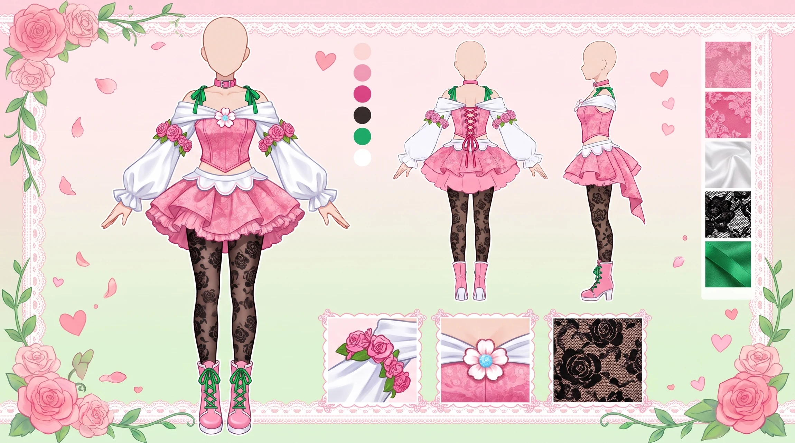
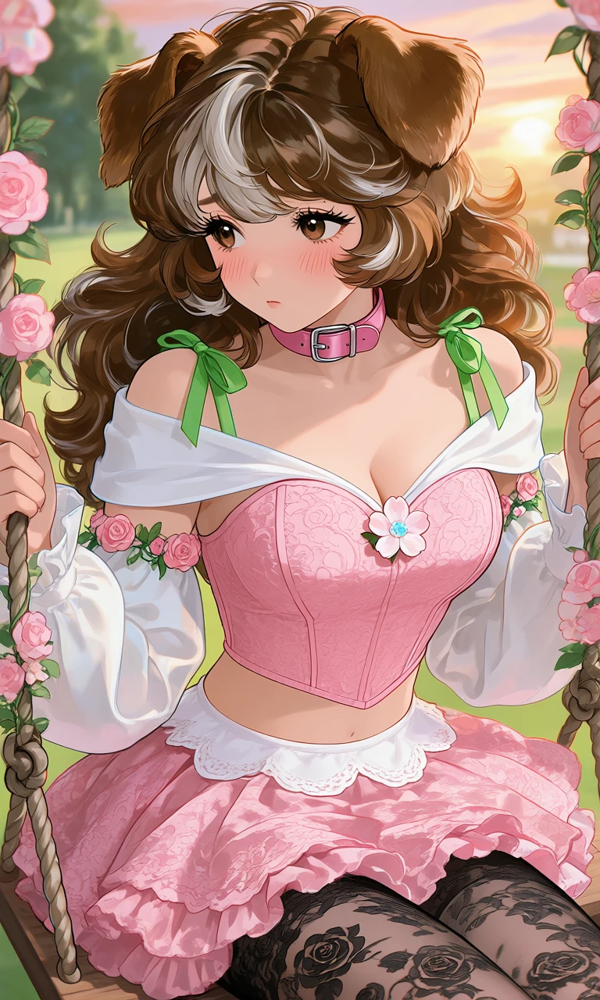
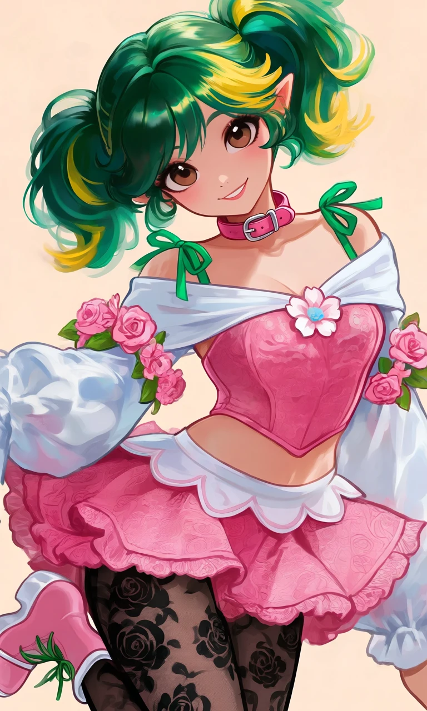

Rosebud Rebel

Outfit Prompt
Her outfit has a "coquette" or "sweet Lolita" feel but with a modern, cropped silhouette that shows off the midriff. She has on a cute pink collar on her neck that matches her outfit.
Top / Upper Body:
Off-shoulder sleeves: A wide, soft white fabric piece sits across the shoulders and upper chest.
Ribbon green spaghetti strap sleeves tied with a bow at the top of the shoulders.
Pink bustier/corset top: Underneath the white off the shoulder sleeves is a strapless, heart-shaped pink top with a textured lace or brocade pattern. It’s fitted and cropped, ending just below the bust to create a flattering silhouette and expose the midriff.
Center accent: A small pink-and-white flower (with a light blue center) is pinned right at the cleavage/center of the bustier for a delicate focal point.
Sleeves:
Detached voluminous white sleeves: These are long, puffy "bishop-style" or balloon sleeves that are separate from the main top.
They feature pink floral garlands (roses or cherry blossoms with green leaves) wrapped around the arms at intervals, giving a very romantic, garden-party feel.
The sleeves end at the wrists but remain loose and elegant.
Bottom / Lower Body:
Pink mini skirt: A short, flouncy skirt in a matching pink lace/brocade pattern. It has:
A white Peter Pan-style collar or waistband trim at the top.
A ruffled, scalloped hem for extra volume and cuteness.
Black patterned tights/stockings: Opaque-to-sheer black legwear with a dark floral/rose motif. The pattern adds contrast and a slightly gothic or vintage touch against the bright pink upper half.
She is wearing cute pink boots with white trim and green ribbon laces.
Outfit Examples



